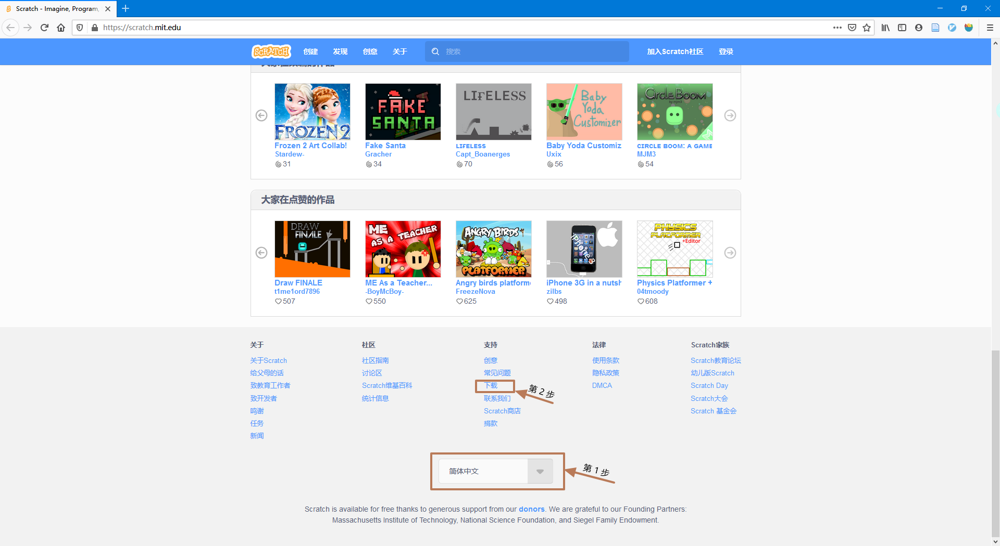
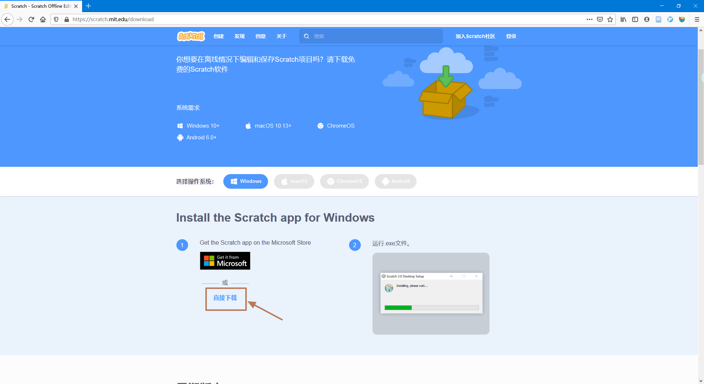
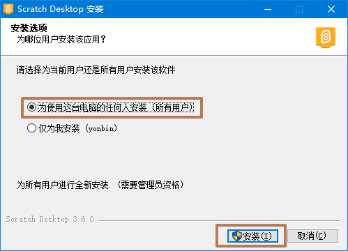
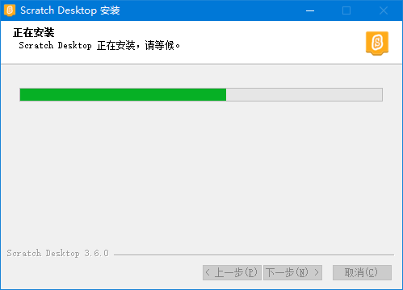
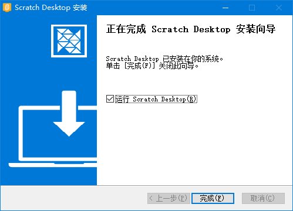
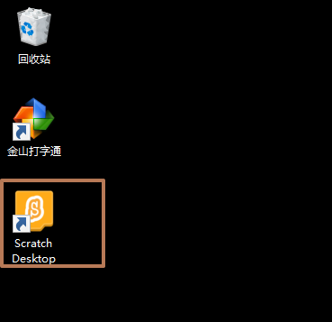
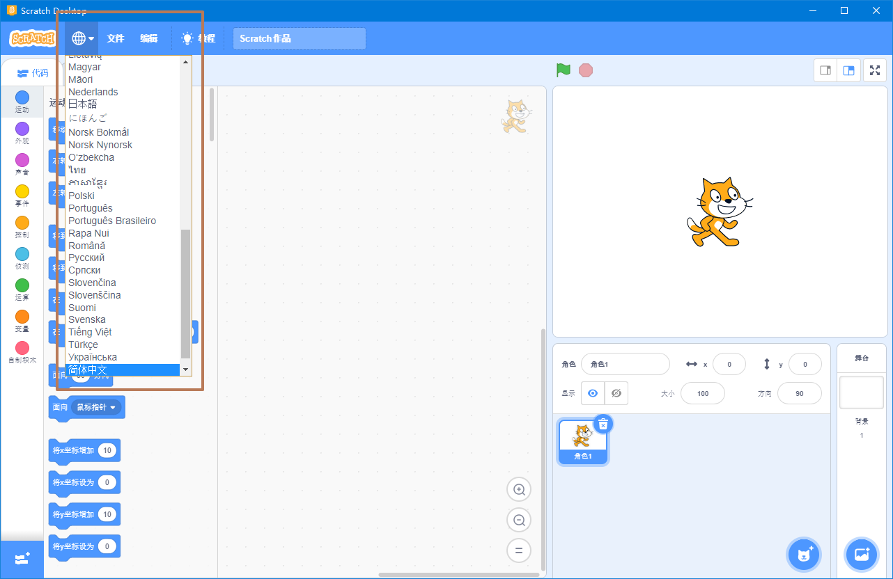

Scrach 3.0 安装
下载
打开浏览器输入 scratch.mit.edu 网址，拖动滚动条到最下边。
第 1 步 ：选择简体中文
第 2 步：点击下载
第 3 步：点击 直接下载，选择您保存的位置（一定要记住噢！），或者您从本教程直接点击直接下载也可以下载


安装
第 1 步：在您保存的位置，找到文件名为：Scratch Desktop Setup 3.6.0.exe 文件，双击进行安装。
第 2 步：安装选项，选择第一项，然后点击安装。

第 3 步：安装中。

第 4 步：点击完成即可安装完成。如果勾选了运行 Scratch Desktop(R)选项，点击完成后，会启动 Scratch。

运行
第 1 步：安装完成后，在桌面上会出现一个Scratch Desktop图标，双击打开Scratch。
《
第 2 步：如果您的Scratch是英文版，选择地球形状t图标拖到最下选择简体中文即可切换到中文环境。

到此，Scratch 安装完成！